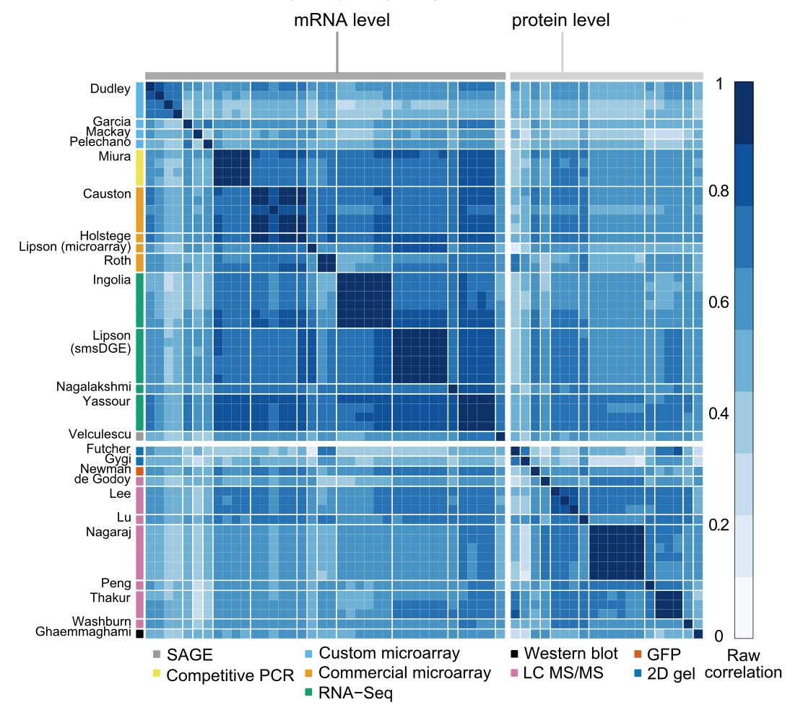

Alexander Franks
Select Papers
-
Alexander, Franks., Andrew Miller, Luke Bornn, and Kirk Goldsberry. Characterizing the spatial structure of defensive skill in professional basketball. Annals of Applied Statistics [link].
-

Alexander, Franks. , Gabor Csardi, D. Allan Drummond, and Edoardo M. Airoldi. Estimating a structured covariance model from multilab mesaurements in high-throughput biology. Journal of the American Statistical Association, 110(509):27--44, 2016 [link]
-
 Edward WJ Wallace, Jamie L Kear-Scott, Evgeny V Pilipenko, Michael H Schwartz, Pawel R Laskowski, Alexandra E Rojek, Christopher D Katanski, Joshua A Riback, Michael F Dion, Alexander M Franks, et al. Reversible, specific, active aggregates of endogenous proteins assemble upon heat stress. Cell, 162(6):1286--1298, 2015 [link]
Edward WJ Wallace, Jamie L Kear-Scott, Evgeny V Pilipenko, Michael H Schwartz, Pawel R Laskowski, Alexandra E Rojek, Christopher D Katanski, Joshua A Riback, Michael F Dion, Alexander M Franks, et al. Reversible, specific, active aggregates of endogenous proteins assemble upon heat stress. Cell, 162(6):1286--1298, 2015 [link]
Awards
- ASA W. J. Youden Award in Interlaboratory Testing (2015) [link]
- Alpha Award for Best Research Paper Award - MIT Sloan Sports Analytics Conference (2015)[link]
- Junior Travel Award, ISBA 2014
- IBM Best Student Paper Award - New England Statistics Symposium (2013)
Invited Talks
- Special Seminar, Department of Biostatistics, UCLA (2015)
- Special Seminar, Department of Biostatistics, Harvard University
- MIT Sloan Sports Analytics Conference (2015)[video],
- Amherst Sports Analytics Forum (2015)
Media
- Grantland: Department of Defense[link]
- Meet the Mapmakers Who are Changing the NBA [video]